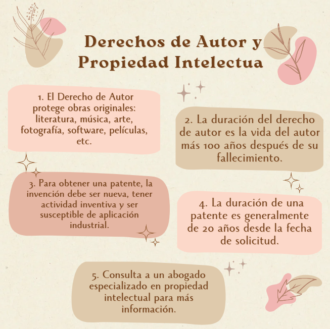
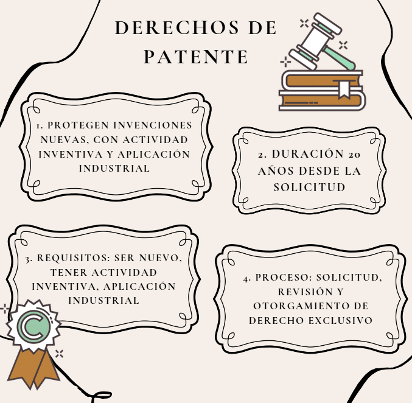

El derecho informático es un área del derecho que se
encarga de regular las relaciones jurídicas que surgen en el ámbito
de las nuevas tecnologías. Se trata de un conjunto de normas, principios
e instituciones que regulan el uso de la información electrónica,
la protección de datos personales, la seguridad informática y otros aspectos relacionados.
El derecho informático aborda diversas áreas, como: Derecho de autor, Delitos informáticos,
Responsabilidad civil por daños emergentes, Derecho procesal informático, Protección de la propiedad
intelectual.
La informática se caracteriza por ser un ámbito muy cambiante, por este motivo, esta ciencia jurídica
analiza las modificaciones de la informática y/o las TICs respecto a la sociedad, con la finalidad de
crear principios y normativas que logren regularla adecuadamente.

Los derechos de autor otorgan a su titular el derecho exclusivo de usar la obra, con algunas excepciones.
Cuando alguien crea una obra original y la fija en un soporte físico, automáticamente se convierte en el
titular de los derechos de autor de dicha obra. Son la protección legal del código destinado a ser leído por una máquina.
Los desarrolladores y propietarios de software lo utilizan para evitar que las personas copien su propiedad intelectual sin permiso
o que lo utilicen de cualquier forma que no hayan acordado.
Las obras que se prestan a la protección por derecho de autor van desde los libros, la música, la pintura,
la escultura y las películas hasta los programas informáticos, las bases de datos, los anuncios publicitarios,
los mapas y los dibujos técnicos.
- Pérdida de control sobre la obra:
Sin derechos de autor protegidos, el creador no tiene control sobre cómo se utiliza, reproduce, distribuye
o comunica públicamente.
- Uso no autorizado:
Otros pueden utilizar la obra sin permiso, lo que puede generar pérdidas económicas y daño a la reputación
del creador.
- Plagio:
La obra puede ser utilizada por otros sin reconocer la autoría original, lo que puede generar conflictos y
disputas.
- Pérdida de ingresos:
Sin derechos de autor protegidos, el creador de la obra no puede generar ingresos a través de la licencia o la
venta de la obra.
- Daño a la reputación:
La falta de protección de los derechos de autor puede generar un daño a la reputación del creador, ya que otros
pueden utilizar la obra de manera que no sea consistente con la visión o los valores del creador.
- Problemas legales:
La falta de protección de los derechos de autor puede generar problemas legales, ya que otros pueden demandar al
creador por supuestas infracciones de derechos de autor.
- Pérdida de la propiedad intelectual:
La falta de protección de los derechos de autor puede generar la pérdida de la propiedad intelectual, ya que
otros pueden utilizar la obra de manera que no sea consistente con la visión o los valores del creador.
- Dificultades para proteger la obra:
Sin derechos de autor protegidos, puede ser difícil para el creador proteger la obra contra la piratería,
el plagio y otros tipos de infracciones.
Los derechos de patentes son un tipo de propiedad intelectual que protege las invenciones y los procesos innovadores.
Una patente es un derecho exclusivo que se otorga a un inventor o a una empresa para explotar una invención durante un
período determinado de tiempo, generalmente entre 15 y 20 años.

Los derechos de patentes se pueden clasificar en diferentes tipos, incluyendo:
- Patentes de invención:Protegen las invenciones y los procesos innovadores.
- Patentes de modelo de utilidad:
Protegen las invenciones que son nuevas y útiles, pero no necesariamente innovadoras.
- Patentes de diseño: Protegen los diseños y la apariencia de los productos.
- Infracción de patentes:
El riesgo de que alguien infrinja la patente y utilice la invención sin permiso.
- Litigios:
El riesgo de que se produzcan litigios y disputas sobre la validez o la interpretación de la patente.
- Costos de mantenimiento:
El riesgo de que los costos de mantener la patente sean altos y no se justifiquen por los beneficios obtenidos.
- Limitaciones geográficas:
El riesgo de que la patente solo sea válida en un país o región específica.
- Limitaciones temporales:
El riesgo de que la patente expire después de un período determinado de tiempo.
- Riesgo de que la patente sea invalidada:
El riesgo de que la patente sea invalidada por una corte o una autoridad administrativa.
- Riesgo de que la patente no sea suficientemente amplia:
El riesgo de que la patente no sea lo suficientemente amplia para cubrir todas las posibles aplicaciones de la invención.